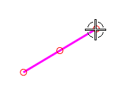

沿直线移动光标，并注意状态行区域上的反馈信息。
当直线的任意部分位于选择球内时，整条直线和全部三个控制点都将高亮显示，状态行区域会告诉您系统是否已检测到直线、直线终点或直线端点。
移动光标到直线的上端点，查看状态区域的信息。
编辑选项依赖与您选择的对象类型，如果您选择了一条直线，您将会得到与您选择直线端点不一样的编辑选项，这个规律对所有使用编辑曲线参数 (原有的)来编辑的曲线类型都适用。
选择直线右侧的端点(确保端点处的小圆点位于选择球内。

在跟踪条上的 XC 输入框中，键入0，在 YC 输入框中，键入50并回车。
选定的直线端点将移动到您指定的位置，而其它端点保持固定。
在编辑曲线参数 (原有的)对话框中，点击取消。